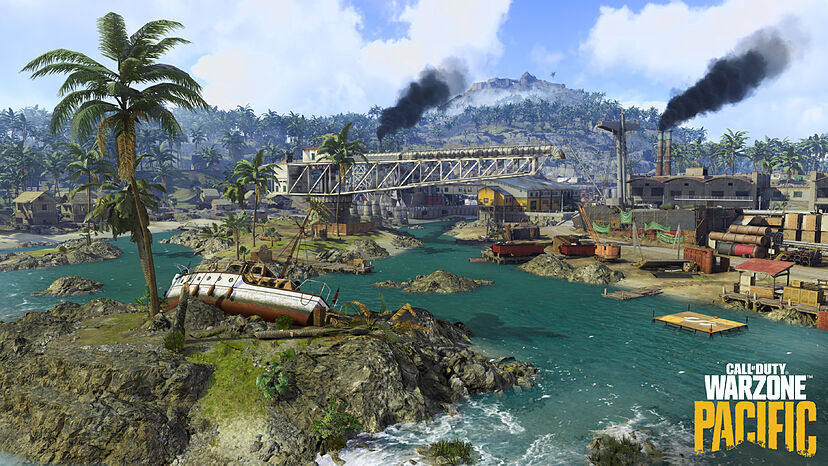

Mapas
Verdansk
Verdansk es el mapa original de Battle Royale que aparece en el juego, inspirado en la ciudad ficticia que aparece en la campaña Modern Warfare y en los modos multijugador. El mapa se basa en la ciudad real de Donetsk. Verdansk sirve como mapa principal para la mayoría de los modos de juego presentados en Warzone. Se introdujo una variación nocturna del mapa en Modern Warfare Season 6, como parte de un evento de Halloween llamado "la cacería de Verdansk" por tiempo limitado.
Isla del renacimiento
La lsla del renacimiento es el segundo mapa introducido en el juego con la integración de los contenidos de Black Ops Cold War. El mapa se basa en la isla Vozrozhdeniya de la vida real, que también apareció en el modo de campaña Call of Duty: Black Ops. En cuanto al diseño, el mapa es una reinvención de la "Isla de Alcatraz", que anteriormente aparecía en el modo Blackout de Black Ops 4 y también es un mapa del modo Battle Royale en Call Of Duty Mobile. A diferencia de Verdansk, la isla del renacimiento es más pequeña en escala, solo permite un máximo de 40 jugadores por partida, aunque en un modo de juego por tiempo limitado llamado "Renacimiento extremo" había hasta 99 jugadores por partida en el mismo mapa.
Caldera
El 8 de diciembre de 2021 el mapa de Verdansk 84 dará paso a Caldera, una isla tropical situada en el océano Pacífico, el cual trajo demasiados problemas de bugs con las colisiones de los objetos, convirtiéndose este en el peor lanzamiento de un mapa de Warzone. Tras múltiples actualizaciones muchos de los errores de desarrollo y mantenimiento del mapa han sido solucionados, dando paso a un equilibrio del juego sin tantas fallas en elementos del mapa. Pese a esto, Caldera, se mantiene siendo para muchos uno de los peores mapas del juego.

Urzikistán
Urzikistán, fue un mapa filtrado que se tenía previsto ver después de los eventos ocurridos en Verdansk, el mapa estaría ubicado en una zona desierta de Oriente Medio con poca vegetación además de ubicaciones extraídas de mapas con temática desértica del multijugador de Call of Duty: Modern Warfare . Por cuestiones desconocidas, este mapa fue cancelado, dando paso así a Verdansk 84.